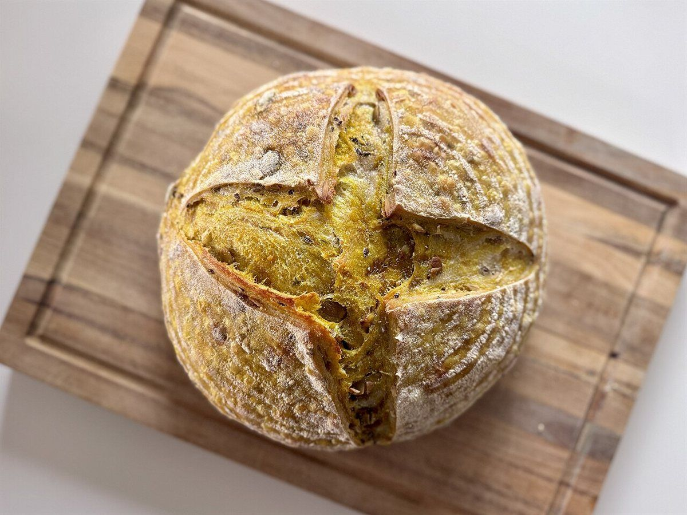
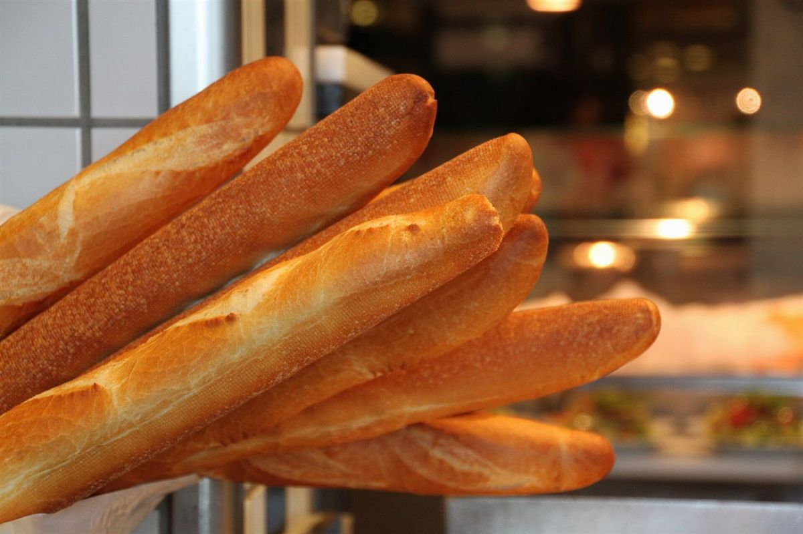
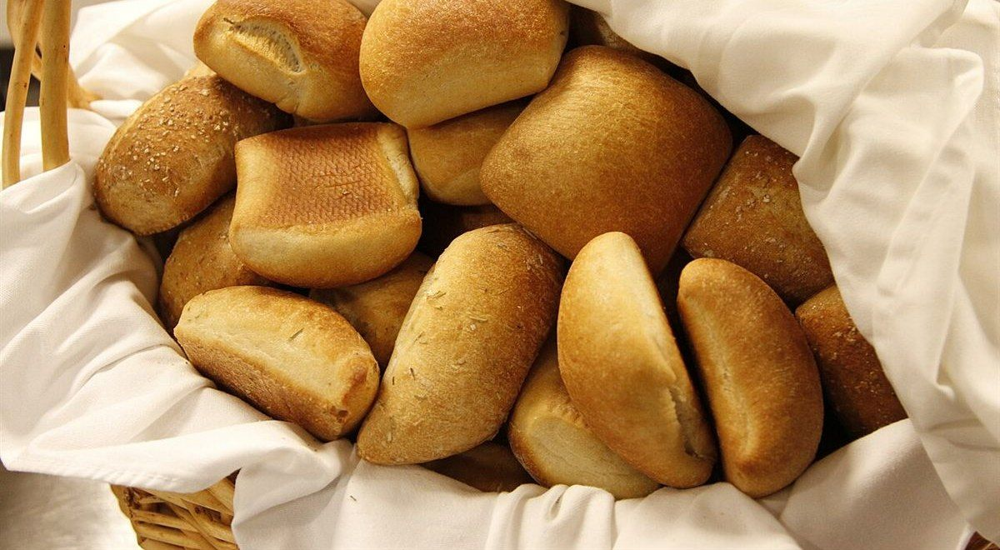

制作側の連想
コンポスターの部位を、配置図にしてみる
このサイトは、庭先に置く堆肥づくりの容器(コンポスター)を図にしたつもりで作りました。六つの部位に番号をふり、上の図と並べています。制作側の連想で、お店の理念・由来とは無関係です。実在の製品の仕様を示すものでもありません。
凡例
六つの部位
- 1ふた(投入口)上から入れるための、外せる蓋。つまみが付いています。
- 2胴(本体)中身を受け止める、先すぼまりの大きな筒。
- 3通気孔胴の側面に開けた、空気を通すための細いスリット。
- 4取り出し口下の方にある、中身を出すための小さな扉。
- 5固定爪ふたと胴の境目で、ふたがずれないよう押さえる留め具。
- 6台座底に付いて、胴を地面から少し浮かせる脚。
ギャラリー(イメージ)
パンの写真



写真はパンやコーヒーのイメージです。お店のものではなく、お店で提供している商品を示すものでもありません。
ギャラリー(イメージ)
パンが並ぶ棚のイメージ


写真は国外または撮影地不明のフリー素材で、お店のものではありません。
ご案内
お店のこと(確認できたものだけ)
| 所在地 | 〒061-1264 北海道北広島市輪厚308 |
|---|---|
| 電話 | 準備中 |
| 営業時間 | 準備中 |
| 定休日 | 準備中 |
| ご予約 | 準備中 |
| 駐車場 | 準備中 |
| SNS | Instagram @utaripan1029 |